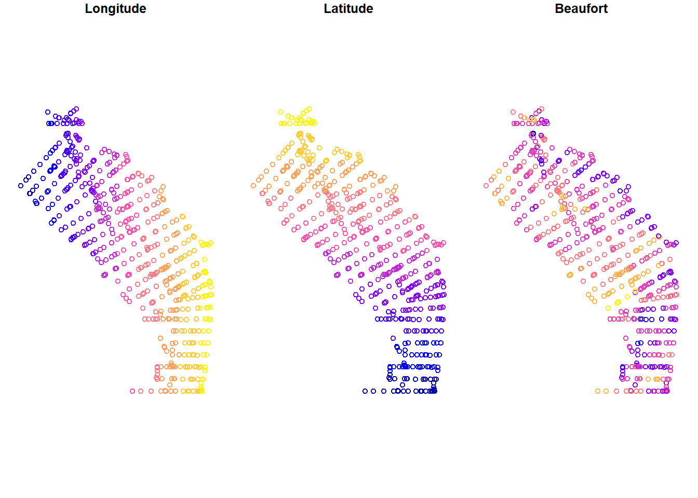
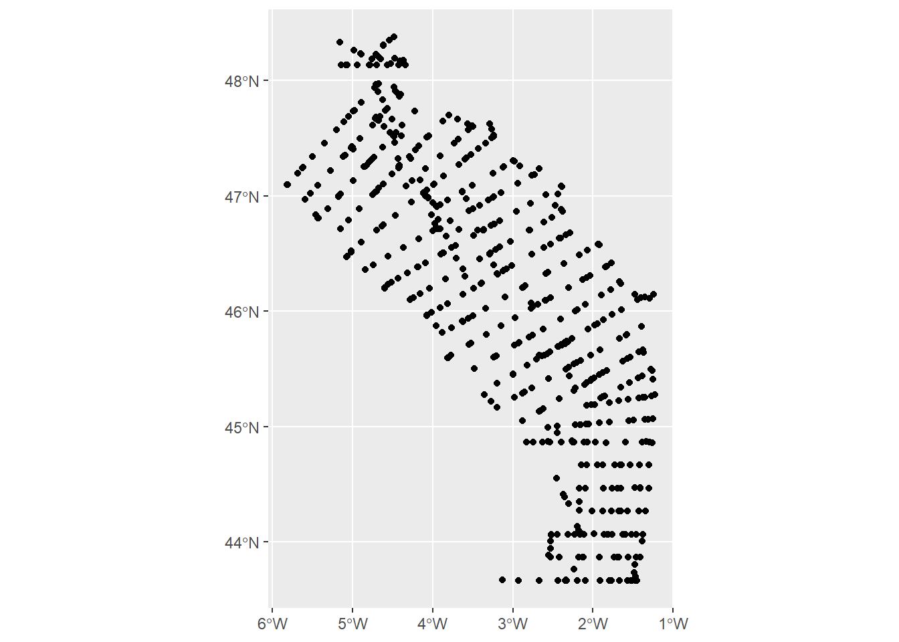
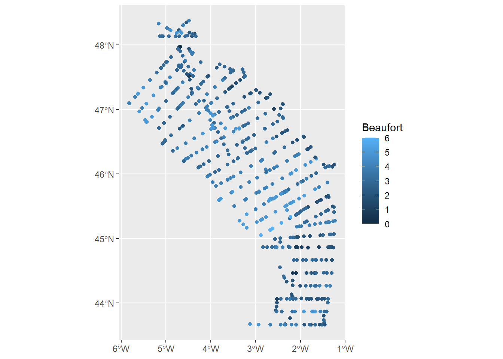
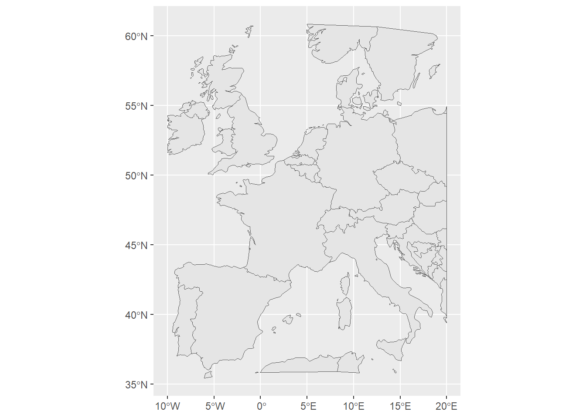
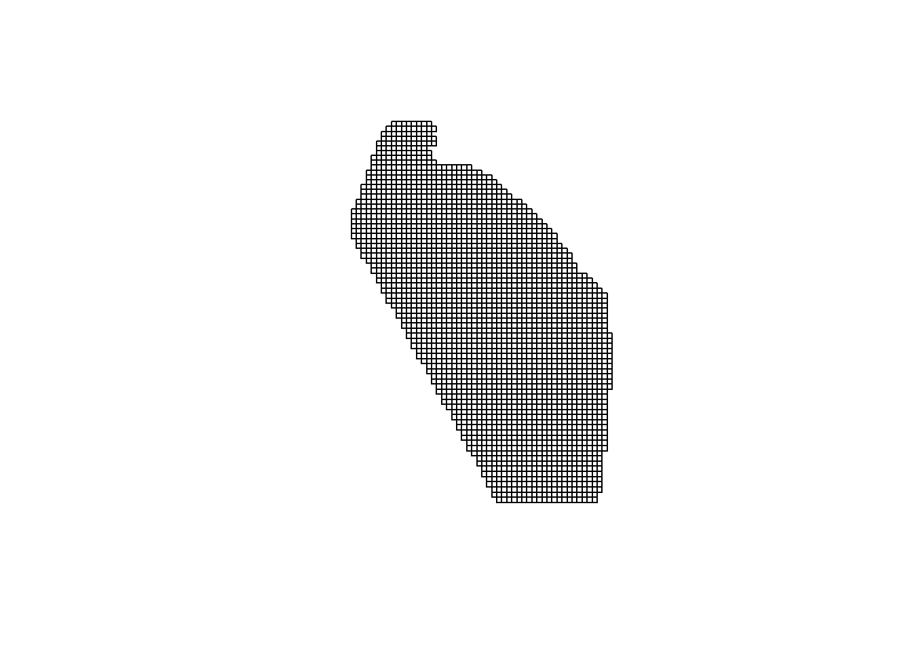
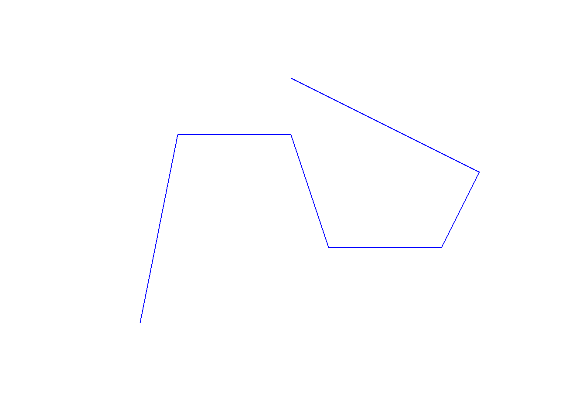
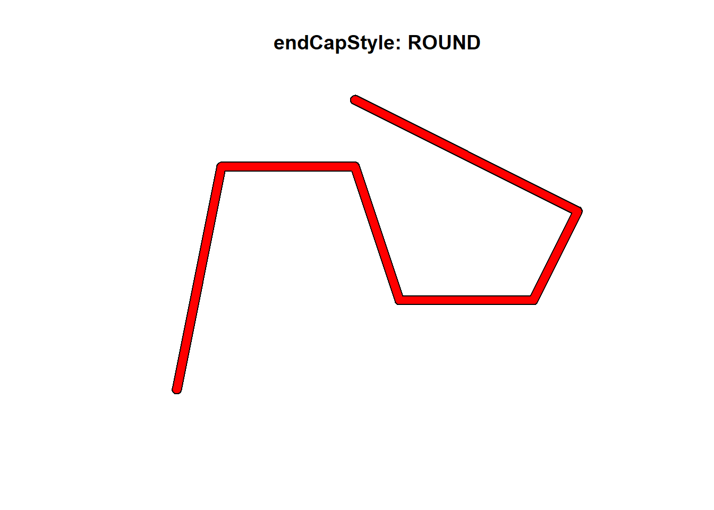
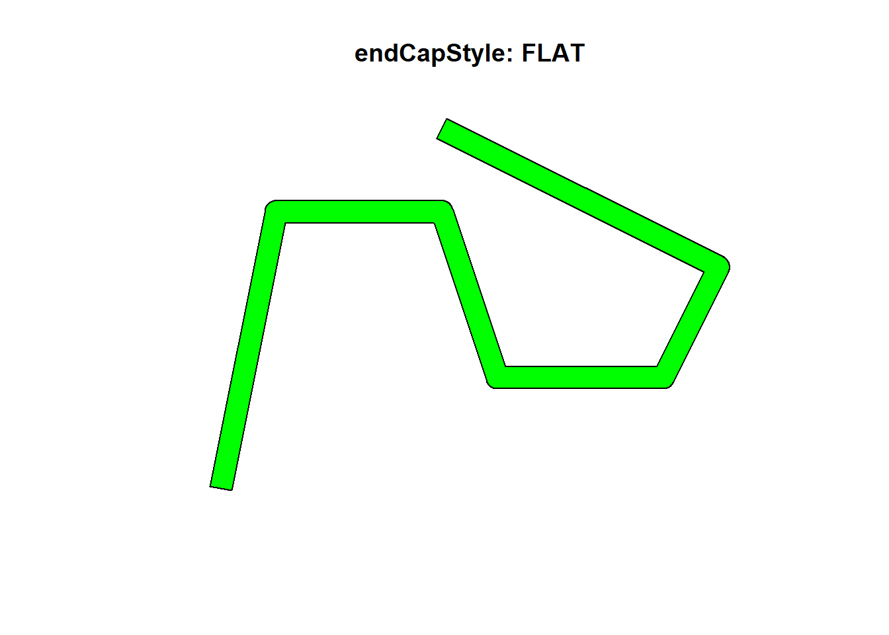

install.packages("sf")Introduction to Spatial
Introduction
This document is an introduction to spatial tools, and in particular the {sf} library.
library(sf)Linking to GEOS 3.12.2, GDAL 3.9.3, PROJ 9.4.1; sf_use_s2() is TRUE{sf} package is a support for simple feature access, a standardized way to encode and analyze spatial vector data. It combines several functions needed to manipulate geospatial data in an easy way.
The key element in {sf} is the GeoPackage (.GPKG). The GeoPackage is an open, standards-based, platform-independent, portable, self-describing, compact format for transferring geospatial information. The following sections will present how {sf} can help to manipulate GeoPackage.
GeoPackage can take different shapes, described in the following table.
| Object | Description |
|---|---|
| POINT | zero-dimensional geometry containing a single point |
| LINESTRING | sequence of points connected by straight, non-self intersecting line segments; one-dimensional geometry |
| POLYGON | geometry with a positive area (two-dimensional); sequence of points form a closed, non-self intersecting ring; the first ring denotes the exterior ring, zero or more subsequent rings denote holes in this exterior ring |
| MULTIPOINT | set of points; a MULTIPOINT is simple if no two Points in the MULTIPOINT are equal |
| MULTILINESTRING | set of linestrings |
| MULTIPOLYGON | set of polygons |
| GEOMETRYCOLLECTION | set of geometries of any type except GEOMETRYCOLLECTION |
Coordinate reference system (CRS) is a framework used to precisely measure locations on the surface of Earth as coordinates. It is thus the application of the abstract mathematics of coordinate systems and analytic geometry to geographic space. Numerous CRS exist, such as:
4326: WGS 84 in degree
3857: WGS 84 in meter
Usefull functions
Here, we will present a non-exhaustive list of functions available in the {sf} package that are useful for manipulating data from PELAGIS.
st_point
A point is created by providing a list with the position of the point on the x-axis and y-axis only.
point <- st_point( 1:2 )
pointPOINT (1 2)plot(point)
st_linestring
A line is created by providing a matrix with the position of each points on the x-axis and y-axis
line <- st_linestring( matrix( c(1,1,
2,2),
ncol = 2, byrow = T) )
lineLINESTRING (1 1, 2 2)plot(line)
st_polygon
A polygon is created by providing a list containing a matrix with the position of each point on the x-axis and y-axis representing the extent of the polygon.
poly <- st_polygon(list(cbind(c(0,1,1,0,0), c(0,0,1,1,0))))
polyPOLYGON ((0 0, 1 0, 1 1, 0 1, 0 0))plot(poly)
st_layer
A GeoPackage (.gpkg) usually contains several layers with several data frames in sf format. They are completely different. Each layers can be characterised by:
layer_name
geometry_type
features (row number)
fields (column number)
crs_name
st_layers("./data/effort_table_2025-11-03.gpkg")Driver: GPKG
Available layers:
layer_name geometry_type features fields crs_name
1 effort_brut Point 816 13 WGS 84
2 effort_linearized Line String 424 10 WGS 84
3 effort_segmented Point 954 10 WGS 84
4 Sightings_with_SegID Point 870 18 WGS 84
5 effort_with_sightings Point 954 14 WGS 84st_read
Read simple features or layers from files or databases. In order to read a geopackage, it is needed to give the layer name.
data_geopackage <- st_read("./data/effort_table_2025-11-03.gpkg", layer = "effort_brut") %>% dplyr::select(Longitude, Latitude, Beaufort)Reading layer `effort_brut' from data source
`C:\Users\gchero\Documents\R Script\Introduction_to_spatial\data\effort_table_2025-11-03.gpkg'
using driver `GPKG'
Simple feature collection with 816 features and 13 fields
Geometry type: POINT
Dimension: XY
Bounding box: xmin: -5.818938 ymin: 43.6641 xmax: -1.225622 ymax: 48.3785
Geodetic CRS: WGS 84data_geopackageSimple feature collection with 816 features and 3 fields
Geometry type: POINT
Dimension: XY
Bounding box: xmin: -5.818938 ymin: 43.6641 xmax: -1.225622 ymax: 48.3785
Geodetic CRS: WGS 84
First 10 features:
Longitude Latitude Beaufort geom
1 -4.541957 48.34592 2 POINT (-4.541957 48.34592)
2 -4.620433 48.29903 2 POINT (-4.620433 48.29903)
3 -4.709607 48.22907 2 POINT (-4.709607 48.22907)
4 -4.709600 48.22906 2 POINT (-4.7096 48.22906)
5 -4.711338 47.96489 2 POINT (-4.711338 47.96489)
6 -4.711300 47.96480 3 POINT (-4.7113 47.9648)
7 -4.680827 47.89950 3 POINT (-4.680827 47.8995)
8 -4.624492 47.83268 3 POINT (-4.624492 47.83268)
9 -4.504307 47.66183 3 POINT (-4.504307 47.66183)
10 -4.393653 47.51744 3 POINT (-4.393653 47.51744)class(data_geopackage)[1] "sf" "data.frame"Vizualize
An SF object can be visualized in several different ways. In the following sections, we will present two fairly simple methods.
plot
The basic “plot” function allows you to project all dimensions at the same time in a panel.
plot(data_geopackage)
geom_sf
The {ggplot2} package provides the geom_sf function, which allows sf objects to be plotted in a graph. Without any parameters, the function simply plots the geometries. It is also possible to plot the geometries in different colours, using ‘colour’ for points, lines and polygon borders, or ‘fill’ for the interior of polygons.
library(ggplot2)
data_geopackage %>%
ggplot() +
geom_sf()
data_geopackage %>%
ggplot() +
geom_sf(aes(color=Beaufort))
st_write
Once the sf object has been manipulated on R, it can be rendered in GeoPackage using the st_write function. Simply provide the sf object and the rendering file with the GeoPackage in .gpkg format (dsn). It is also possible to add parameters to the export:
layer: layer name
append: should we append to an existing layer, or replace it? if TRUE append, if FALSE replace.
delete_dsn:delete data source dsn before attempting to write?
delete_layer: delete layer before attempting to write? The default for st_write is FALSE which raises an error if the layer exists.
st_write(data_geopackage, dsn = "./export/export_test.gpkg")
st_write(data_geopackage, dsn = "./export/export_test.gpkg", layer = "test")
st_write(data_geopackage, dsn = "./export/export_test.gpkg", append = TRUE)
st_write(data_geopackage, dsn = "./export/export_test.gpkg", delete_layer = TRUE)st_drop_geometry
This function allows you to remove the geometry column from an sf object to transform it into a data frame.
data_df <- data_geopackage %>% st_drop_geometry()
head(data_df) Longitude Latitude Beaufort
1 -4.541957 48.34592 2
2 -4.620433 48.29903 2
3 -4.709607 48.22907 2
4 -4.709600 48.22906 2
5 -4.711338 47.96489 2
6 -4.711300 47.96480 3class(data_df)[1] "data.frame"st_as_sf
This function allows you to convert a data frame into an sf object. You must specify the ‘Longitude’ and ‘Latitude’ columns (in that order) and the coordinate reference system associate (crs).
st_as_sf(data_df, coords = c("Longitude", "Latitude"), crs = 4326)Simple feature collection with 816 features and 1 field
Geometry type: POINT
Dimension: XY
Bounding box: xmin: -5.818938 ymin: 43.6641 xmax: -1.225622 ymax: 48.3785
Geodetic CRS: WGS 84
First 10 features:
Beaufort geometry
1 2 POINT (-4.541957 48.34592)
2 2 POINT (-4.620433 48.29903)
3 2 POINT (-4.709607 48.22907)
4 2 POINT (-4.7096 48.22906)
5 2 POINT (-4.711338 47.96489)
6 3 POINT (-4.7113 47.9648)
7 3 POINT (-4.680827 47.8995)
8 3 POINT (-4.624492 47.83268)
9 3 POINT (-4.504307 47.66183)
10 3 POINT (-4.393653 47.51744)st_coordinates
This function extracts the coordinates of the SF object as a matrix with two entries.
head(st_coordinates(data_geopackage)) X Y
[1,] -4.541957 48.34592
[2,] -4.620433 48.29903
[3,] -4.709607 48.22907
[4,] -4.709600 48.22906
[5,] -4.711338 47.96489
[6,] -4.711300 47.96480One possible use is to add the columns with the coordinates to the sf object using dplyr.
data.frame(lon = st_coordinates(data_geopackage)[,1],
lat = st_coordinates(data_geopackage)[,2]) %>% cbind(data_geopackage$geom) %>% head() lon lat geometry
1 -4.541957 48.34592 POINT (-4.541957 48.34592)
2 -4.620433 48.29903 POINT (-4.620433 48.29903)
3 -4.709607 48.22907 POINT (-4.709607 48.22907)
4 -4.709600 48.22906 POINT (-4.7096 48.22906)
5 -4.711338 47.96489 POINT (-4.711338 47.96489)
6 -4.711300 47.96480 POINT (-4.7113 47.9648)st_transform
The function transforms or converts coordinates of simple feature.
data_geopackage %>% st_transform(3857) %>% head() # transform degree to meterSimple feature collection with 6 features and 3 fields
Geometry type: POINT
Dimension: XY
Bounding box: xmin: -524463.7 ymin: 6101001 xmax: -505608.3 ymax: 6164598
Projected CRS: WGS 84 / Pseudo-Mercator
Longitude Latitude Beaufort geom
1 -4.541957 48.34592 2 POINT (-505608.3 6164598)
2 -4.620433 48.29903 2 POINT (-514344.3 6156748)
3 -4.709607 48.22907 2 POINT (-524271.1 6145049)
4 -4.709600 48.22906 2 POINT (-524270.3 6145048)
5 -4.711338 47.96489 2 POINT (-524463.7 6101016)
6 -4.711300 47.96480 3 POINT (-524459.5 6101001)st_convex_hull
This function creates the convex hull of a set of points.
point_to_polygone <- data_geopackage %>%
st_union() %>% # from point to multi-point
st_convex_hull() # from multi-point to polygon around
plot(point_to_polygone)
st_area
The st_area() function is used to calculate areas.
st_area(point_to_polygone)110914112232 [m^2]st_length
The st_length() function is used to calculate distance
st_length(line)[1] 1.414214worldmap
The {rnaturalearth} package contains the world map in polygon format. It is possible to extract the world map from it.
library(rnaturalearth)
worldmap <- ne_countries(scale = 'medium', type = 'map_units',returnclass = 'sf')
ggplot(worldmap) + geom_sf()
st_crop
It crops an sf object to a specific rectangle.
europe <- st_crop(worldmap,
xmin = -10,
xmax = 20,
ymin = 35,
ymax = 60)Warning: attribute variables are assumed to be spatially constant throughout
all geometriesggplot(europe) + geom_sf()
st_union
Combine several features geometries into one, without unioning or resolving internal boundaries.
head(europe %>% dplyr::select(sovereignt, type, name_en))Simple feature collection with 6 features and 3 fields
Geometry type: GEOMETRY
Dimension: XY
Bounding box: xmin: -7.542969 ymin: 41.89756 xmax: 12.43916 ymax: 60.72645
Geodetic CRS: WGS 84
sovereignt type name_en geometry
6 Vatican Sovereign country Vatican City POLYGON ((12.43838 41.9062,...
29 United Kingdom Country Jersey POLYGON ((-2.082227 49.2553...
30 United Kingdom Country Guernsey POLYGON ((-2.520898 49.5063...
31 United Kingdom Country Isle of Man POLYGON ((-4.392285 54.2253...
32 United Kingdom Geo unit Wales MULTIPOLYGON (((-3.326172 5...
33 United Kingdom Geo unit Scotland MULTIPOLYGON (((-2.14707 55...europe <- st_union(europe)
europeGeometry set for 1 feature
Geometry type: MULTIPOLYGON
Dimension: XY
Bounding box: xmin: -10 ymin: 35.42893 xmax: 20 ymax: 60.85257
Geodetic CRS: WGS 84MULTIPOLYGON (((18.95645 57.9, 18.90059 57.9154...st_difference
The function takes two geometries as input parameters and returns the part of the first geometry that does not intersect with the second geometry.
point_to_polygone_4326 <- point_to_polygone%>% st_transform(4326)
remove_coast_line <- st_difference(point_to_polygone_4326, europe)
ggplot(remove_coast_line) + geom_sf()
st_make_grid
The function allows to create a grid from a polygon. There are 2 main arguments:
“what”: to define the output (can be “polygons”, “corners” or “centers”)
“cellsize”: size of each cell of the grid. Pay attention to the CRS in input (3857 to be in meter)
st_make_grid produce a grid in the all area, then simply select the cells in the polygon.
remove_coast_line_meter = st_transform(remove_coast_line, 3857) # in meter
grid_cell <- st_make_grid(remove_coast_line_meter, what = "polygons", cellsize = 10000) # 10000m = 10km
grid_cell = grid_cell[remove_coast_line_meter, ]
grid_cell = grid_cell %>% st_transform(4326) # back to degree
plot(grid_cell)
st_join
The st_join function does the same thing as a left_join in {dplyr}, taking into account the spatial dimension. The ‘join’ argument can be specified by a predicate function with the same profile as ‘st_nearest_feature’ (e.g. st_contains, st_is_within_distance, st_overlaps, st_within, st_intersects).
For example, we are going to associate for each point, its position in the grid realized previously. We define a unique ID for each sub-polygon and try to associate it with our origin points.
# associate to each cell a unique id
grid_cell <- grid_cell %>% st_as_sf() %>% dplyr::rename(geom = x) %>% dplyr::mutate(grid_id = dplyr::row_number())
grid_cellSimple feature collection with 2391 features and 1 field
Geometry type: POLYGON
Dimension: XY
Bounding box: xmin: -5.818938 ymin: 43.6641 xmax: -1.147699 ymax: 48.39968
Geodetic CRS: WGS 84
First 10 features:
geom grid_id
1 POLYGON ((-3.213824 43.6641... 1
2 POLYGON ((-3.123992 43.6641... 2
3 POLYGON ((-3.034161 43.6641... 3
4 POLYGON ((-2.944329 43.6641... 4
5 POLYGON ((-2.854498 43.6641... 5
6 POLYGON ((-2.764666 43.6641... 6
7 POLYGON ((-2.674835 43.6641... 7
8 POLYGON ((-2.585003 43.6641... 8
9 POLYGON ((-2.495172 43.6641... 9
10 POLYGON ((-2.40534 43.6641,... 10Now we can associate our points with the unique identifier from our 100 km² polygons by searching for the polygon in which the points are located (st_within). It would also have been possible to try to associate them with the nearest polygon (st_nearest_feature).
# st_join
data_geopackage_with_id <-
st_join(data_geopackage,
grid_cell,
join = st_within)
data_geopackage_with_idSimple feature collection with 816 features and 4 fields
Geometry type: POINT
Dimension: XY
Bounding box: xmin: -5.818938 ymin: 43.6641 xmax: -1.225622 ymax: 48.3785
Geodetic CRS: WGS 84
First 10 features:
Longitude Latitude Beaufort grid_id geom
1 -4.541957 48.34592 2 2390 POINT (-4.541957 48.34592)
2 -4.620433 48.29903 2 2380 POINT (-4.620433 48.29903)
3 -4.709607 48.22907 2 2370 POINT (-4.709607 48.22907)
4 -4.709600 48.22906 2 2370 POINT (-4.7096 48.22906)
5 -4.711338 47.96489 2 2316 POINT (-4.711338 47.96489)
6 -4.711300 47.96480 3 2316 POINT (-4.7113 47.9648)
7 -4.680827 47.89950 3 2303 POINT (-4.680827 47.8995)
8 -4.624492 47.83268 3 2284 POINT (-4.624492 47.83268)
9 -4.504307 47.66183 3 2212 POINT (-4.504307 47.66183)
10 -4.393653 47.51744 3 2157 POINT (-4.393653 47.51744)st_intersects
# Look for intersection
st_intersects(data_geopackage, grid_cell)Sparse geometry binary predicate list of length 816, where the
predicate was `intersects'
first 10 elements:
1: 2390
2: 2380
3: 2370
4: 2370
5: 2316
6: 2316
7: 2303
8: 2284
9: 2212
10: 2157# Subset data in the intersection
data_geopackage[st_intersects(data_geopackage, grid_cell) %>% lengths > 0,]Simple feature collection with 814 features and 3 fields
Geometry type: POINT
Dimension: XY
Bounding box: xmin: -5.813713 ymin: 43.66513 xmax: -1.225622 ymax: 48.3785
Geodetic CRS: WGS 84
First 10 features:
Longitude Latitude Beaufort geom
1 -4.541957 48.34592 2 POINT (-4.541957 48.34592)
2 -4.620433 48.29903 2 POINT (-4.620433 48.29903)
3 -4.709607 48.22907 2 POINT (-4.709607 48.22907)
4 -4.709600 48.22906 2 POINT (-4.7096 48.22906)
5 -4.711338 47.96489 2 POINT (-4.711338 47.96489)
6 -4.711300 47.96480 3 POINT (-4.7113 47.9648)
7 -4.680827 47.89950 3 POINT (-4.680827 47.8995)
8 -4.624492 47.83268 3 POINT (-4.624492 47.83268)
9 -4.504307 47.66183 3 POINT (-4.504307 47.66183)
10 -4.393653 47.51744 3 POINT (-4.393653 47.51744)st_intersection
st_intersection(data_geopackage %>% head(), grid_cell)Warning: attribute variables are assumed to be spatially constant throughout
all geometriesSimple feature collection with 6 features and 4 fields
Geometry type: POINT
Dimension: XY
Bounding box: xmin: -4.711338 ymin: 47.9648 xmax: -4.541957 ymax: 48.34592
Geodetic CRS: WGS 84
Longitude Latitude Beaufort grid_id geom
5 -4.711338 47.96489 2 2316 POINT (-4.711338 47.96489)
6 -4.711300 47.96480 3 2316 POINT (-4.7113 47.9648)
3 -4.709607 48.22907 2 2370 POINT (-4.709607 48.22907)
4 -4.709600 48.22906 2 2370 POINT (-4.7096 48.22906)
2 -4.620433 48.29903 2 2380 POINT (-4.620433 48.29903)
1 -4.541957 48.34592 2 2390 POINT (-4.541957 48.34592)st_buffer
st_buffer computes a buffer around this geometry/each geometry. The parameter ‘dist’ gives the width of the buffer and ‘endCapStyle’ the style of line ends.
l1 = st_as_sfc("LINESTRING(0 0,1 5,4 5,5 2,8 2,9 4,4 6.5)")
plot(l1, col='blue')
plot(st_buffer(l1, dist = .1, endCapStyle="ROUND"), reset = FALSE, main = "endCapStyle: ROUND", col='red')
plot(st_buffer(l1, dist = .2, endCapStyle="FLAT"), reset = FALSE, main = "endCapStyle: FLAT", col='green')
st_crs
Retrieve coordinate reference system from sf object.
st_crs(data_geopackage)Coordinate Reference System:
User input: WGS 84
wkt:
GEOGCRS["WGS 84",
ENSEMBLE["World Geodetic System 1984 ensemble",
MEMBER["World Geodetic System 1984 (Transit)"],
MEMBER["World Geodetic System 1984 (G730)"],
MEMBER["World Geodetic System 1984 (G873)"],
MEMBER["World Geodetic System 1984 (G1150)"],
MEMBER["World Geodetic System 1984 (G1674)"],
MEMBER["World Geodetic System 1984 (G1762)"],
MEMBER["World Geodetic System 1984 (G2139)"],
MEMBER["World Geodetic System 1984 (G2296)"],
ELLIPSOID["WGS 84",6378137,298.257223563,
LENGTHUNIT["metre",1]],
ENSEMBLEACCURACY[2.0]],
PRIMEM["Greenwich",0,
ANGLEUNIT["degree",0.0174532925199433]],
CS[ellipsoidal,2],
AXIS["geodetic latitude (Lat)",north,
ORDER[1],
ANGLEUNIT["degree",0.0174532925199433]],
AXIS["geodetic longitude (Lon)",east,
ORDER[2],
ANGLEUNIT["degree",0.0174532925199433]],
USAGE[
SCOPE["Horizontal component of 3D system."],
AREA["World."],
BBOX[-90,-180,90,180]],
ID["EPSG",4326]]